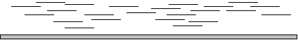

Stockholm Bioinformatics Center, SBC
Lecture notes: Molecular Bioinformatics 2001,
Uppsala University
Lecture 26 Jan 2001
Per Kraulis
3. The genomes: how?
The methods we have available today for determining the sequence of
DNA can produce sequence data for at most 1000
bases. This means that it is necessary to split up the total
DNA of an organism, sequence the parts, and reassemble the know
sequence segments based on similarity (identity) between the
overlapping parts of the DNA sequence segments.
The two main variants of this 'divide-and-conquer' approach are:
Clone-based sequencing
-
First generate stable clones of rather large segments of DNA
from the organism under study. The size of the segments depend on
the technique used. The most commonly used are cosmids (max 45 kb),
BACs (max 300 kb) and YACs (max 400 kb).
-
The clones are selected so that they cover the genome
(on a per-chromosome basis) in as complete but non-redundant fashion
as possible, thus defining a so-called tiling path. This is done
by an experimental strategy called physical mapping.
-
For each selected clone, sequence it by fragmenting the DNA in
them randomly, sequencing about 500-700 bases, and reassembling
the complete clone sequence from the data.
-
The complete genome is then reassembled from the known tiling
path and the clone sequences.
A good illustration of this method is the description of the procedure
used for the Caenorhabditis elegans genome as published by
the
C. elegans sequencing consortium, Science (1998) 282, 2012-2018.
Shotgun sequencing
-
Obtain a pure sample of the entire genome of the organism (all
chromosomes), and split it up into small fragments. The size is on
the order of 500-1000 bases.
-
Clone these small fragments, thus creating a genomic library.
-
Sequence as many of the clones as necessary.
-
Reassemble the genome by computational analysis of the sequence
fragments. For this to work, an oversampling of the genome is
required, so that the residual number of unclosed gaps is as low as
possible.
An important aspect of genome sequencing is that it was long
believed that the shotgun strategy would not work on such large DNA
molecules as chromosomes. The frequency of gaps in the final
assembly (due to uncovered segments) and the problems that repetitive
DNA sequences caused, would render shotgun sequencing useless for
large DNA molecules. However, Craig Venter formed
The Institute for Genomics Research (TIGR) in order
to use shotgun sequencing in a systematic fashion for
determining entire bacterial genomes.

The basic idea is that by sequencing a large number of
randomly chosen fragments in an industrialized fashion, it
should be possible to reassemble the complete genome
computationally. The oversampling is critical. This is shown
schematically in the figure. Simulations indicate that at a coverage
of 10x, it should be possible to reassemble a complete genome with
very few gaps left over. By 10x one means the number of fragments
required to have each base in the genome represented in 10 fragments
on average.
The strategy developed by TIGR, and subsequently used by Celera for
the Drosophila melanogaster project (and their human genome
project) has another important component. The DNA fragments are
generated as BAC clones (100-150 kb), of which some are randomly
chosen to be fully sequenced by the shotgun method. Other BAC clones
are then sequenced only at their ends, so that it becomes possible to
choose which of them should be sequenced next. This extra information
('mates') helps considerably in reassembling the entire genome. A
description of the entire procedure used to assemble the Drosophila
melanogaster genome is given in the paper by
Eugene
Myers et al, Science (2000) 287, 2196-2204.
There are two important problems inherent in any known sequencing
strategy:
- The law of diminishing return. There are always
parts of a genome that are more difficult to sequence than others. For
example, a specific DNA fragment may cause problems (toxicity,
interference) in the bacterial system used to maintain the clones, so
that such clones are eliminated or strongly underrepresented in the
genomic libraries. This also applies to gap-finishing: Some gaps are
more difficult than others. Often, the final 5% of sequence is more
expensive to obtain than the first 50%.
- The existence of intractable regions in the
genomes. In the higher eukaryotes, a very variable part of
the genome consists of extremely repetitive sequence, which no known
technology can handle. This part of the genome is called the
heterochromatin, while the euchromatin are the more 'normal' parts of
the genome. In Drosophila melanogaster the entire genome
has a size of about 180 Mb, of which about 120 Mb is euchromatin, and
was sequenced by Celera. Of the rest, 60 Mb or so of heterochromatin,
only small parts could be sequenced by Celera. The remaining (major)
parts of the heterochromatin are impossible to sequence with the
currently available techniques.
Copyright © 2001
Per Kraulis
$Date: 2001/01/26 14:59:06 $